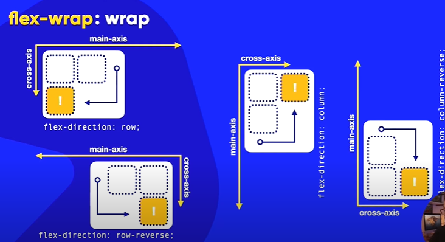
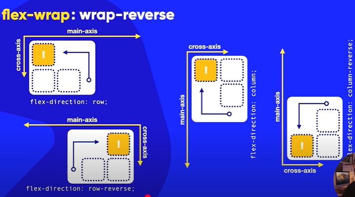

Exemplo de boco A
Exemplo de boco B
Exemplo de boco C
Exemplo de boco D
Exemplo de boco E
Exemplo de boco F
Exemplo de boco G
Normal- Ira sempre seguir o sentido do cross axis ou o oposto dele
flex-wrap : wrap (SENTIDO DO CROSS AXIS )

flex-wrap : wrap-reverse (SENTIDO OPOSTO AO CROSS AXIS)
